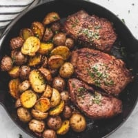

Garlic Butter Steak and Potatoes Skillet Recipe

Garlic Butter Steak and Potatoes Skillet Recipe
Easy Garlic Butter Steak and Potatoes Skillet with juicy seared and crispy roasted potatoes all oven baked in one pan. Nothing goes together better than garlic steak and potatoes! ENJOY!
Ingredients
- 2-4 petite steaks
- salt and pepper, to taste
- garlic powder, to taste
- 1 tablespoon olive oil
- 2-4 pounds baby potatoes, diced
- 2-6 tablespoons salted butter
- 2 teaspoons minced garlic
- 1 teaspoon dried Italian herb blend
- 1 teaspoon chopped fresh thyme
- 1 teaspoon chopped fresh parsley
Instructions
- Preheat over to 400 degrees. In a small bowl combine butter, garlic, and dried herbs and set aside. Season steaks generously with salt, pepper, and garlic powder on both sides.
- Place skillet over medium-high heat and drizzle with oil. Sear steaks for 2-3 minutes on each side until nice and browned. Transfer to a plate and set aside.
- Add potatoes to the skillet, season generously with salt, pepper, and garlic powder and saute 3-5 minutes until browned. Push potatoes to one side of the pan and return steaks to the other side of the pan.
- Transfer to oven and cook for 15-20 minutes until potatoes are fork-tender and steak is cooked to your preferred doneness.
- Immediately after removing from oven, place a dollop of the garlic butter on each steak and the rest on the potatoes and let it melt over the food before stirring the potatoes to coat in butter and then topping with copped thyme and parsley before serving.